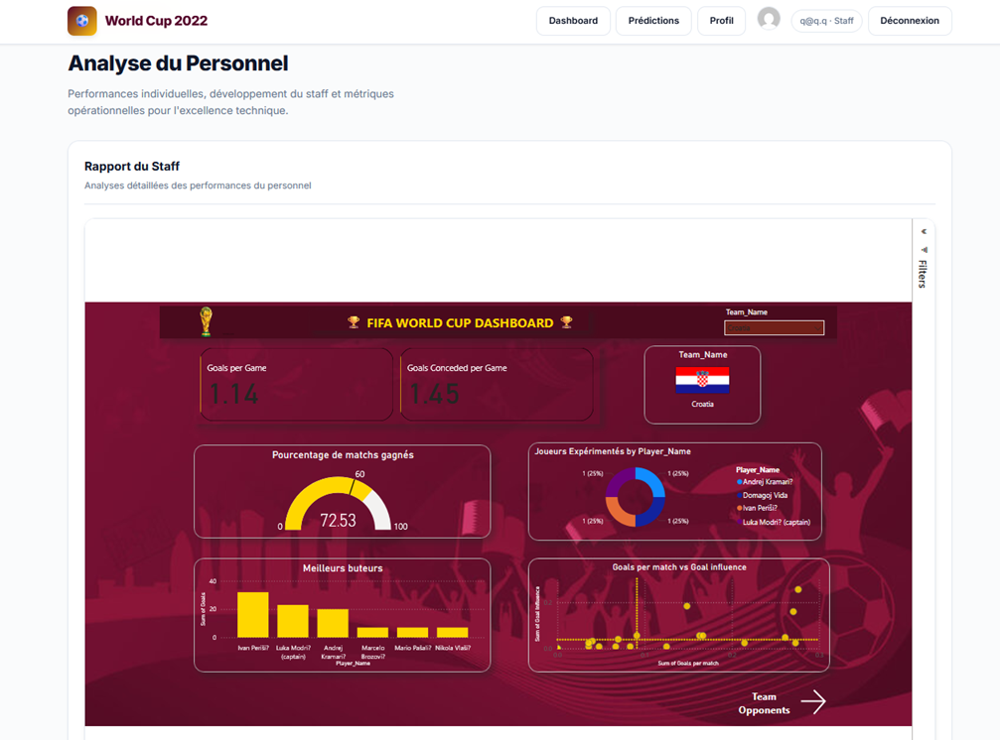
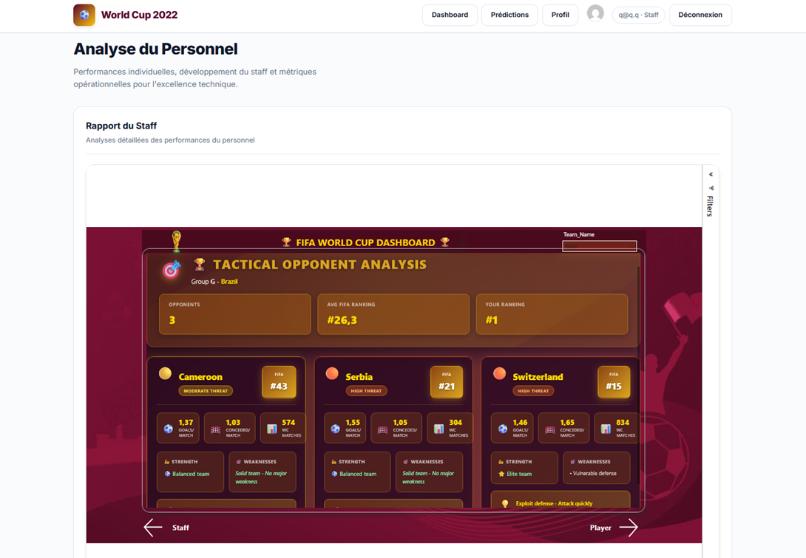
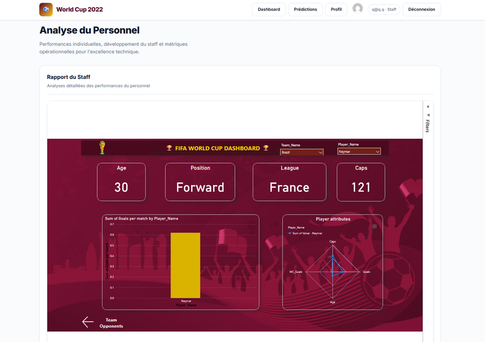
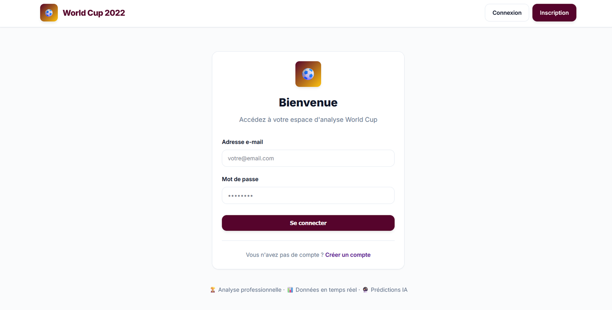
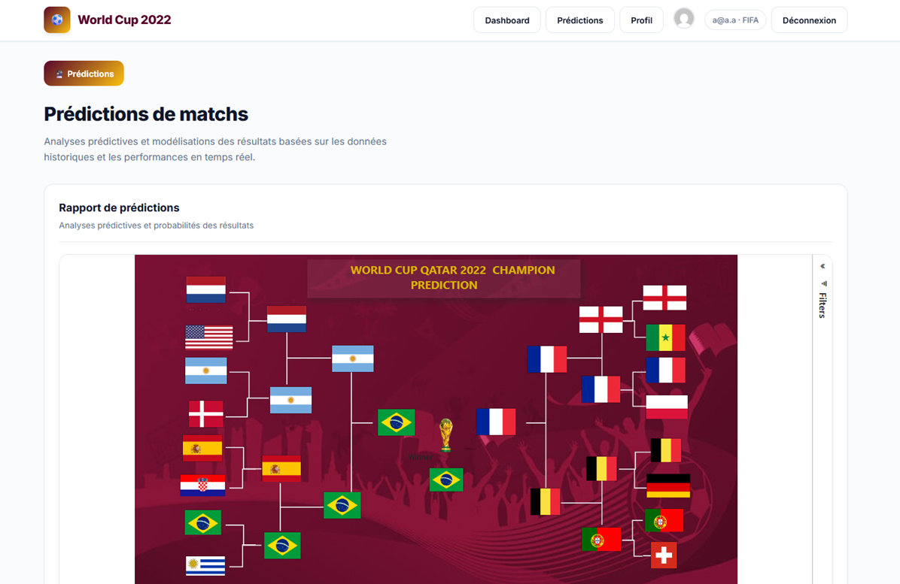

World Cup Power BI Dashboard
Project Description
A little web application that exposes an interactive Power BI dashboard for analyzing World Cup performances. Users can explore key KPIs, visualize historical trends, and gain insights into team and player statistics through dynamic filtering and data exploration.
One thing to note is that we also implemented Row-Level Security (RLS) to provide role-based access control. Different users see different slices of the data depending on their permissions. This was enforced both at the Power BI level (using dataset-level RLS rules) and at the application level.
Screenshots




